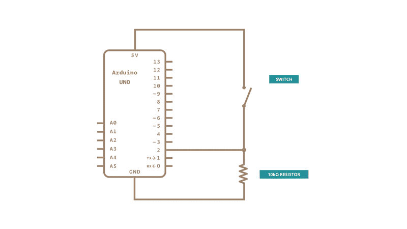

Sometimes when I listen to music, I "play" along by tapping the violin fingerings on my
thumb, imagining the sound in my
head. For this project, I wanted to recreate that experience, but actually make sound for
people to hear!
This instrument could also make a good practice instrument if the musician used headphones.
They would simply play the
fingerings on their thumb and hear the digital music from their headphones without
disturbing anyone nearby. It would
also be much more portable than a violin.
Finally, I wanted to regain the use of my fourth finger. I amputated my left pinky in
December 2019, which severely
inhibits my ability to play violin. Although a new digital violin would also have different
capabilities compared to a
traditional violin, I wanted to enable myself to create music with my fourth finger in the
way that already felt natural
to me as a violinist.
Implementation
To achieve my goals, I made an instrument out of two batting gloves.
The right hand controls the creation of sound. The musician touches a finger to their thumb in order
to play on one of
the violin strings (i.e. G, D, A, E), where the index finger selects the lowest string. This is
analogous to how the
right hand of a traditional violin controls the production of sound by moving the bow or by
plucking.
The left hand can modify the sound by adding fingers on the string. The musician would similarly
touch their finger to
their thumb to increase the pitch. This is a very similar motion to the left-hand operation of a
traditional violin.
The instrument produces sound via a Max patch on a laptop. The laptop receives the inputs from the
musician via a serial
connection to an Arduino, which is hooked up with wires to the gloves. Every fingertip of the gloves has
a paper
fastener on it, which is soldered to the wires to the Arduino.
As far as the circuit logic goes, the Arduino gives 5V to each hand's thumb, and then listens for
digital input on each
finger. When a finger is touching the thumb, it will report a high voltage to the Arduino, but if
not, it only reads
from ground to produce a low voltage. The circuit diagram is similar to the switch diagram shown
here, but each hand
would have three more fingers with resistors normally connecting to ground, and then the whole
diagram is duplicated for
the second hand.

Demo
I recorded myself playing "The Kitchen Criminal" by Normal Mackay and Ruairidh Macmillan on the
digit-al violin. This is
one of my favorite fiddle tunes that I learned when I studied abroad in Scotland. I added piano
and percussion tracks
for harmonic and rhythmic context.
Journey
Past
I started by making a simple prototype that produced sound on the Max patch when I connected some
wires into a circuit.
From there, I positioned the wires inside of the glove and fed the tips out through the
ventilation holes in the glove.
Because I didn't have any long wires, I used some long alligator clips to achieve the length
required for the glove.
This prototype was very fragile, as the wires would often slip out from the grip of the alligator
clips, breaking the
circuit. It was also very challenging to play, as the wire tips were very small and might not
complete a circuit when I
touched my fingertip to my thumb. I attempted to mitigate this by adding tin foil to my thumb to
increase the viable
area, but the tin foil was also fragile and would break when the wire tip stabbed through it.
Present
I improved on this prototype by acquiring access to paper fasteners, long stranded wire, and a
soldering iron. I
soldered appropriate-length wires to ten paper fasteners, then wrapped the legs of each paper
fastener around a
fingertip. I added electrical tape on the back of each finger to make the positioning more
secure.
The current implementation affords different playing technique than a traditional violin.
Specifically, I found that
fast string crossings, a somewhat difficult technique on a traditional violin, were extremely
easy on the digit-al
violin. By contrast, notes that are quickly repeated are more difficult on the digit-al violin
than on a traditional
violin. For this reason, in my demo video, I chose to ornament certain notes by performing a
quick string crossing,
whereas in the original performance those notes were ornamented by a quick bow turn. I'm excited
to learn more about the
unique character of the digit-al violin and how it differs from a traditional violin.
The playing experience on the digital violin was overall very natural. The right-hand technique,
which differs
significantly from traditional right-hand technique, took some getting used to, but it became
easier with practice. My
experience using my left pinky was paradoxically exciting and anticlimactic; I was very glad to
use my fourth finger
like I wanted to, but it ironically felt so natural that I didn't think about it too much when I
played. I'm proud to
have produced an instrument that was such a good fit for my body and my abilities.
Future
In the future, the digit-al violin would receive several modifications.
First, I would choose more durable fingertip targets than paper fasteners. In the process of
practicing for my demo
video, the legs of both thumbs broke off from overuse. The paper fasteners still work as
targets, but they are much less
securely affixed to the glove, so I moved them to less-used fingers. Also, the paper fasteners
can hook on each other
during very fast passages, so I would choose fingertip targets of a less ring-like shape.
Second, I would sew the targets onto the glove. The current implementation uses electrical tape
to secure the paper
fasteners onto the fingertips, but my body heat can heat the glue enough to produce a residue
that can block a circuit
connection if it migrates onto the head of the paper fastener, requiring maintenance to clear.
Third, I would include two or three targets on each fingertip to enable sharps and/or flats for
each fingering.
Currently, the entire instrument is coded to play in the key of Emi/Gma, but with multiple
targets on each fingertip, a
musician could play in any key and could play pieces with accidentals.
Finally, I would fasten the wires to the base of each finger. Sometimes a fingertip could get
caught in another finger's
wire. This was especially true of my amputated finger, whose fingertip was often positioned at
the maximum gap between
my third finger and its wire. If I fastened the wires to the fingers in multiple places (not
just at the fingertip),
then it would become harder or impossible for other fingers to get caught.